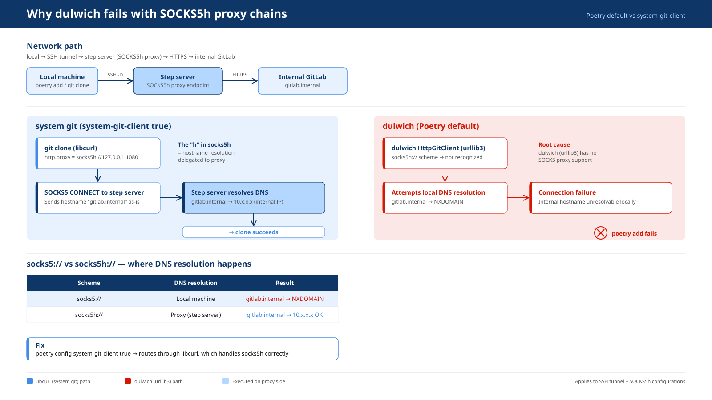

flowchart LR
A[git clone<br/>libcurl] -->|"① socks5h CONNECT<br/>sends hostname as-is"| B[localhost:1080<br/>SSH -D tunnel]
B -->|SSH-encrypted| C[Step server]
C -->|"② resolve gitlab.internal<br/>via internal DNS"| D[gitlab.internal:443]
classDef app fill:#e3eefc,stroke:#2c6cb0,color:#1a3c66
classDef proxy fill:#fff4d6,stroke:#b8860b,color:#5a4209
classDef inside fill:#e2f0d9,stroke:#3a7d2b,color:#1f4d12
class A app
class B,C proxy
class D inside
style B fill:#fffbe9,stroke:#b8860b
🔎 Objective
- You can already
git clonefrom an internal GitLab (gitlab.internal) through an SSH tunnel acting as a SOCKS5h proxy. - But when you run
poetry add git+https://gitlab.internal/..., Poetry raises a connection error — even though nothing changed on the network side. - Understand why the failure happens and apply the one-line fix.
Network Path for Internal GitLab Access
local ─── SSH -D 1080 ──► step server ──► internal GitLab
(SOCKS5h proxy)🎯 Goal
TL;DR
Poetry uses dulwich (pure-Python Git) by default. Dulwich’s HTTP client (urllib3) does not support SOCKS proxies, so it cannot handle the socks5h:// scheme your SOCKS5h tunnel requires. Switching to the system Git client (libcurl) fixes it.
# Global: applies to all projects for the current user
poetry config system-git-client true
# Local: stored in poetry.toml (project-only)
poetry config --local system-git-client true
NotePoetry version note
system-git-client was introduced as experimental.system-git-client in Poetry 1.2.0 and renamed to system-git-client in Poetry 2.0.0. The commands above use the 2.0 name. On 1.x, replace system-git-client with experimental.system-git-client.
The network path
local → SSH -D 1080 → step server (SOCKS5h) → HTTPS → gitlab.internalThe step server acts as a SOCKS5h proxy: you forward a local port through SSH, and the step server performs both DNS resolution and the TCP connection to GitLab on your behalf. The h suffix matters — it tells the proxy to resolve the hostname itself, which is the only way gitlab.internal can be reached from outside the internal network.

Why git clone succeeds
When you run git clone https://gitlab.internal/... with
# ~/.gitconfig
[http "https://gitlab.internal"]
proxy = socks5h://127.0.0.1:1080the system Git client delegates HTTP(S) to libcurl. libcurl natively understands socks5h://, so the flow looks like this:
libcurl forwards the bare hostname gitlab.internal to the proxy inside the SOCKS5 CONNECT request. The step server resolves it against the internal DNS and connects to the real IP — the local machine never needs to resolve the hostname at all.
Why poetry add fails (the dulwich problem)
By default, Poetry uses dulwich for all Git operations. Dulwich is a pure-Python Git implementation that uses urllib3 for HTTP(S) transport. urllib3 has no SOCKS proxy support, and it does not recognise the socks5h:// scheme.
The failure happens in two steps:
Problem 1 — socks5h:// scheme is unrecognised
Dulwich’s HttpGitClient passes the proxy URL to urllib3’s ProxyManager. urllib3 only knows http:// and https:// proxy schemes. When it sees socks5h://, it either ignores the proxy entirely or raises an error before any connection is made.
Problem 2 — DNS resolution falls back to the local machine
Without a working SOCKS proxy, urllib3 tries to resolve gitlab.internal on the local machine. The hostname only exists in the internal DNS, so the local resolver returns NXDOMAIN and the connection fails immediately.
flowchart LR
A[poetry add<br/>dulwich / urllib3] -->|"socks5h:// → unrecognised<br/>falls back to local DNS"| B["gitlab.internal<br/>→ NXDOMAIN ✕"]
classDef fail fill:#fde2e2,stroke:#c0392b,color:#7b1d1d
class A,B fail
| system git (libcurl) | dulwich (urllib3) | |
|---|---|---|
| Git backend | System git binary |
Pure Python |
| SOCKS5h support | Native (libcurl) | None |
| DNS resolution | Delegated to proxy | Local — fails for *.internal |
git clone works? |
Yes | Yes (if git.proxy is set — dulwich does read http.proxy for plain HTTP/HTTPS schemes, but cannot handle SOCKS) |
poetry add works? |
Yes | No |
TipWhy can dulwich sometimes handle
http.proxy?
Dulwich does read git config http.proxy and passes it to urllib3. The problem is not that dulwich ignores the proxy config — it’s that urllib3 only supports http:// and https:// proxy schemes. A socks5h:// value is silently dropped, leaving dulwich to resolve the hostname locally.
The fix
Switch Poetry to use the system Git client, which routes through libcurl and handles socks5h:// correctly.
# Poetry ≥ 2.0
poetry config system-git-client true # global
poetry config --local system-git-client true # project-local (writes poetry.toml)You can verify the setting:
poetry config system-git-client
# trueAfter that, poetry add git+https://gitlab.internal/org/repo.git goes through the same libcurl path as git clone and succeeds.
WarningPrerequisite:
git must be installed
With system-git-client true, Poetry calls the system git binary. If git is not on PATH, Poetry will error out. In most development environments this is a non-issue, but it matters for minimal Docker images built without Git.
Glossary
- def: dulwich
description: |
A pure-Python Git implementation that does not depend on the system `git`
binary or any native code. Poetry uses it by default to maximise portability.
Its HTTP transport layer is built on urllib3, which currently has no SOCKS proxy
support — the root cause of the `poetry add` failure in SOCKS5h environments.
- def: system-git-client
description: |
A Poetry configuration option (`poetry config system-git-client true`) that
replaces dulwich with the system `git` binary for all Git operations.
Introduced as `experimental.system-git-client` in Poetry 1.2.0 and renamed to
`system-git-client` in Poetry 2.0.0. When enabled, Git HTTP(S) transport is
handled by libcurl, which natively supports SOCKS5h proxies.
- def: SOCKS5
description: |
A proxy protocol that forwards raw TCP between a client and a server.
Unlike an HTTP proxy it does not inspect or rewrite the payload,
so HTTPS, SSH, and other TCP-based protocols pass through transparently.
- def: SOCKS5h
description: |
A SOCKS5 variant where the proxy server — not the client — performs
DNS resolution. Required when the target hostname (e.g. `gitlab.internal`)
only exists in an internal DNS that the local machine cannot reach.
The trailing "h" stands for "hostname resolution on the proxy side."